건축기사 (2005-09-04 기출문제)
1과목: 건축계획
1. 다음은 도서관 건축계획의 주요한 사항이다. 다른 종류의 건축계획과 비교하여 상대적으로 그 중요도가 가장 큰 내용은?
- 관내시설과 인근의 유사시설과의 상호관계 검토
- 시설물의 운영 목적, 내용, 방법의 구체적 분석
- 도서관의 내용의 성장에 따른 증축 고려
- 건설기금과 경상비에 대한 검토
(정답률: 64%)

2. 다음의 호텔에 대한 설명 중 옳지 않은 것은?
- 아파트먼트 호텔은 장기간 체제 하는데 적합한 호텔로서 각 객실에는 주방설비를 갖추고 있다.
- 커머셜 호텔은 스포츠 시설을 위주로 이용되는 숙박시설을 갖추고 있다.
- 터미널 호텔은 교통기관의 발착지점에 위치한다.
- 리조트 호텔은 조망 및 주변경관의 조건이 좋은 곳에 위치하는 것이 좋다.
(정답률: 85%)
3. 병원건축계획에 관한 기술 중 가장 부적당한 것은?
- 도심부에 병원건축을 계획할 경우 블록타입(Block Type) 보다는 파빌리온 타입(Pavillion Type)이 유리하다.
- 중앙진료부는 외래부와 병동부의 중간에 위치하는 편이 좋다.
- 병동부의 전체면적에 대한 비율은 40% 정도가 적당하다.
- 심근, 협심증환자를 대상으로 집중 치료하는 간호 단위를 C.C.U(Coronary Care Unit)라 한다.
(정답률: 72%)
4. 사무소 건축계획 중 오피스 랜드스케이핑에 관한 설명으로 옳지 않은 것은?
- 작업장의 집단을 자유롭게 그루핑하여 불규칙한 평면을 유도한다.
- 개실시스템의 한 형식으로 배치를 의사전달과 작업 흐름의 실제적 패턴에 기초를 둔다.
- 변화하는 작업의 패턴에 따라 조절이 가능하며 신속하고 경제적으로 대처할 수 있다.
- 대형가구 등 소리를 반향시키는 기재의 사용이 어렵다.
(정답률: 66%)
5. 고려대학교 본관 건물은 누구의 작품인가?
- 박동진
- 박길룡
- 김수근
- 김중업
(정답률: 44%)
6. 은행의 건축계획에 대한 설명 중 옳지 않은 것은?
- 영업실의 면적은 은행원 1인당 3m2를 기준으로 한다.
- 출입구에 전실을 둘 경우에 바깥문은 밖여닫이 또는 자재문으로 하기도 한다.
- 은행실은 은행건축의 주체를 이루는 곳으로 기둥수가 적고 넓은 실이 요구된다.
- 야간금고는 가능한 한 주출입문 근처에 위치하도록 하며 조명시설이 완비되도록 한다.
(정답률: 63%)
7. 주택의 평면계획에 관한 기술 중 옳지 않은 것은?
- 거실은 통로나 Hall로서 사용되는 방법의 평면배치는 적극적으로 피하도록 한다.
- 침실 출입문은 침대가 직접 보이지 않도록 안여닫이로 하는 것이 좋다.
- 식당의 최소 면적은 식탁의 크기와 모양, 의자의 배치상태, 주변통로와의 여유공간 등에 의해 결정된다.
- 침대 배치는 창가에 머리쪽이 오도록 두는 것이 가장 바람직하다.
(정답률: 53%)
8. 미술관의 전시실 순회형식에 대한 설명 중 틀린 것은?
- 연속순로 형식은 단순함과 공간절약의 의미에서 이점은 있으나 많은 실을 순서별로 통하여야 하는 불편이 있다.
- 중앙홀 형식에서 중앙홀이 크면 동선의 혼란은 많으나 장래의 확장에는 유리하다.
- 갤러리 및 코리더 형식은 각실에 직접 들어갈 수 있는 점이 유리하며 필요시에 자유로이 독립적으로 폐쇄할 수가 있다.
- 갤러리 및 코리더 형식에서는 복도 자체도 전시공간으로 이용이 가능하다.
(정답률: 75%)
9. 많은 고객이 판매장 구석까지 가기 쉬운 이점이 있으며 이형의 진열장이 많이 필요한 백화점의 진열장 배치방식은?
- 자유유선배치
- 직각배치
- 방사배치
- 사형배치
(정답률: 60%)
10. 극장 무대부 계획에 대한 설명 중 적절하지 못한 것은?
- 사이클로라마는 무대의 제일 뒤에 설치되는 무대배경용의 벽을 말한다.
- 그리드 아이언 위에는 사람이 다닐 만한 공간을 확보해야 한다.
- 플로어 트랩은 프로시니움 아치 뒤에 설치하는 발판으로 조명 조작이나 눈, 비 등의 연출을 위해 사용된다.
- 무대의 깊이는 프로시니움 아치폭 이상의 크기가 필요하다.
(정답률: 26%)
11. 다음 고딕건축과 가장 관계가 먼 것은?
- 첨두아치(Pointed Arch)
- 장미창(Rose Window)
- 첨탑(Spire)
- 펜덴티브(Pendentive)
(정답률: 64%)
12. 호텔의 건축계획에 관한 설명 중 옳지 않은 것은?
- 주식당(Main Dining Room)은 숙박객 및 외래객을 대상으로 하며 외래객이 편리하게 이용할 수 있도록 출입구를 별도로 설치한다.
- 기준층의 객실수는 기준층의 면적이나 기둥간격의 구조적인 문제에 영향을 받는다.
- 로비는 퍼블릭 스페이스의 중심으로 휴식, 면회, 담화, 독서 등 매우 다목적으로 사용되는 공간이다.
- 객실의 크기는 대지나 건물의 형태에 영향을 받지않는다.
(정답률: 76%)
13. 공동주택의 평면형식에 관한 설명 중 가장 부적당한 것은?
- 계단실형은 통행부 면적이 크며 출입이 불편하다.
- 편복도형은 각호의 통풍 및 채광이 양호하다.
- 중복도형은 독신자 아파트에 많이 이용된다.
- 집중형은 각 세대별 조망이 다르다.
(정답률: 75%)
14. 미술관 전시실의 조명 및 채광계획에 대한 기술 중 옳지 않은 것은?
- 인공조명은 빛의 강도와 색분포 조절이 쉽다.
- 전시조명이란 건축에 부대하는 일반조명이나 비상조명을 제외한 전시자료나 전시장치에 대한 조명을 말한다.
- 전시품의 보존 문제와 무관하게 자연조명의 채택은 꼭 필요하다.
- 전시에서의 채광 및 조명계획은 이를 필요로 하는 실내공간의 디자인을 고려하여 건축과 일체화시켜 계획하여야 한다.
(정답률: 66%)
15. 사무소건축의 코어플랜에 관한 설명으로 옳지 않은 것은?
- 코어의 위치는 사무소건축의 성격이나 평면형, 구조, 설비방식 등에 따라 결정한다.
- 중심코어형은 바닥면적이 큰 경우에 유리하며, 분리코어형은 2방향 피난에 유리하다.
- 편심코어형은 기준층 바닥면적이 큰 경우에 유리하며, 독립코어형은 내진구조상 유리하다.
- 중심코어형은 외관이 획일적으로 되기 쉽지만, 구조코어로서 가장 바람직한 형이다.
(정답률: 75%)
16. 초등학교 건축계획에 대한 설명 중 옳지 않은 것은?
- 동 학년의 학급은 될 수 있으면 동일한 층에 모으는 고려가 필요하다.
- 저학년은 될 수 있으면 1층에 있게 하며 교문에 근접시킨다.
- 저학년의 배치형으로는 1열로서 있는 것보다 마당을 둘러싸는 형이 좋다.
- 저학년에서는 교과교실형의 학교운영방식이 바람직하다.
(정답률: 78%)
17. 아파트의 단면형식 중 메조넷 형식(Maisonette Ttpe)에 대한 설명으로 옳지 않은 것은?
- 하나의 주거단위가 복층 형식을 취한다.
- 주택 내의 공간의 변화가 없으며 통로에 의해 유효면적이 감소한다.
- 양면 개구부에 의한 일조, 통풍 및 전망이 좋다.
- 거주성, 특히 프라이버시는 높으나 소규모 주택에는 면적면에서 불리하다.
(정답률: 81%)
18. 포스트모더니즘의 건축가로 “건축의 복합성과 대립성(Complexity and Contradiction in Architecture)”이라는 저서를 쓴 건축가는?
- 다니엘 번함
- 피터 아이젠만
- 로버트 벤츄리
- 조셉 팍스턴
(정답률: 64%)
19. 주방에서의 조리과정을 고려할 때 기구의 배치순서가 가장 합리적인 것은?
- 레인지 → 싱크대 → 조리대 → 냉장고
- 조리대 → 싱크대 → 레인지 → 냉장고
- 싱크대 → 조리대 → 냉장고 → 레인지
- 냉장고 → 싱크대 → 조리대 → 레인지
(정답률: 81%)
20. 다음의 설명에 알맞은 학교운영방식은?
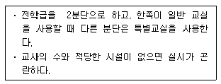
- 교과교실형(Department System)
- 플래툰형(Platoon Type)
- 달톤형(Dalton Type)
- 개방학교(Open School)
(정답률: 78%)
2과목: 건축시공
21. 설계도서에서 정미량으로 산출한 D10 철근량은 2,870kg이다. 할증을 고려한 소요량으로서 8m짜리 철근을 몇 개를 운반하여야 하는가? (단, D10 철근은 0.56kg/m)
- 650개
- 660개
- 673개
- 681개
(정답률: 37%)
22. 타일시공에 관한 설명 중 틀린 것은?
- 타일나누기는 먼저 기준선을 정확히 정하고 될 수 있는 대로 온장을 사용하도록 한다.
- 타일을 붙이기 전에 바탕의 불순물을 제거하고 청소를 하여야 한다.
- 타일붙임 바탕의 건조상태에 따라 뿜칠 또는 솔질로 물을 고루 축인다.
- 외부 대형벽돌타일 시공시 줄눈의 표준나비는 5mm정도가 적당하다.
(정답률: 65%)
23. 도장공사에서 철제계단(양면칠) 면적산정 방법으로 옳은 것은?
- 경사면적×1배
- 경사면적×1.5배
- 경사면적×(2.0~2.5배)
- 경사면적×(3~5배)
(정답률: 51%)
24. 목재의 접착제가 아닌 것은?
- 카세인
- 멜라민 수지
- 폐놀수지
- 스티롤 수지
(정답률: 30%)
25. 셀프레벨링재 바름에 대한 설명으로 옳지 않은 것은?
- 재료는 대부분 기배합 상태로 이용되며, 석고계 재료는 물이 닿지 않는 실내에서만 사용한다.
- 모든 재료의 보관은 밀봉상태로 건조시켜 보관해야하며, 직사광선이 닿지 않도록 한다.
- 경화후 이어치기 부분의 돌출 및 기포 흔적이 남아 있는 주변의 튀어나온 부위는 연마기로 갈아서 평탄하게 하고, 오목하게 들어간 부분 등은 된비빔셀프레벨링재를 이용하여 보수한다.
- 셀프레벨링재의 표면에 물결무늬가 생기지 않도록 창문 등을 밀폐하여 통풍과 기류를 차단하고, 시공중이나 시공완료 후 기온이 10℃이하가 되지 않도록 한다.
(정답률: 37%)
26. 콘크리트공사 중 거푸집공사에 있어 거푸집의 존치기간에 대한 기술로서 틀린 것은?
- 바닥슬래브밑, 지붕슬래브밑 및 보밑의 거푸집판재는 원칙적으로 받침기둥을 해체한 후 떼어낸다.
- 기초, 보옆, 기둥 및 벽의 거푸집판재 존치기간은 콘크리트의 압축강도 50kgf/cm2 이상에 도달한 것이 확인될 때까지로 한다.
- 빋침기둥의 존치기간은 슬래브밑, 보밑 모두 설계 기준강도의 90%이상 콘크리트 압축강도가 얻어진 것이 확인될 때까지로 한다.
- 받침기둥을 해체할 시 해체 가능한 압축강도는 최저 120kgf/cm2이다.
(정답률: 30%)
27. 다음 중 안전유리가 아닌 것은?
- 겹친유리
- 강화유리
- 망입유리
- 형판유리
(정답률: 54%)
28. 콘크리트 시공시 진동다짐에 관한 사항으로 부적당한 것은 어느 것인가?
- 진동기의 사용간격은 60cm 이내로 하여 1회의 깊이는 60cm 이하로 한다.
- 안정되어 엉기거나 굳기 시작한 콘크리트라도 콘크리트의 표면에 페이스트가 엷게 떠오를 때까지 진동기를 사용하여야 한다.
- 진동다짐의 콘크리트 거푸집은 일반 거푸집 보다 20~30% 정도 견고히 한다.
- 진동다짐은 부배합의 콘크리트보다 빈배합의 콘크리트에 유효하다.
(정답률: 69%)
29. 철판과 철판이 겹치든가 맞닿는 부분이 각을 이루도록 용접하는 것은?
- 맞댄용접
- 모살용접
- 용입용접
- 다층용접
(정답률: 65%)
30. 응찰자가 낙찰되어도 계약을 체결할 의사가 없는 자의 입찰참가를 방지하기 위한 제도로서 낙찰되지 않은 자에게는 개찰 후에 반환하여 주고 낙찰자에게는 계약체결 후에 반환하여 주는 보증은?
- 입찰보증
- 계약보증
- 하자보증
- 이행보증
(정답률: 55%)
31. 다음 중 가치공학(Value Engineering)기법의 적용과 직접적인 관계가 가장 먼 것은?
- 기능설계
- 원가절감
- 브레인스토밍(Brainstorming)
- 공기단축
(정답률: 36%)
32. 콘크리트 배합에 있어서 슬럼프 값을 증대시키는 방법으로 틀린 것은 어느 것인가?
- 사율(砂率)을 크게 한다.
- 모래를 굵은 것을 쓴다.
- 자갈을 굵은 것을 쓰도록 한다.
- 표면활성제를 첨가한다.
(정답률: 29%)
33. 블록쌓기에서 와이어 메쉬(Wire Mesh)를 줄눈에 묻어 쌓는 효과로 틀린 것은 다음 중 어느 것인가?
- 블록벽의 수직 하중을 경감하는 효과가 있다.
- 블록벽의 교차부의 균열을 보강하는 효과가 있다.
- 블록벽에 균열을 방지하는 효과가 있다.
- 블록에 가해지는 횡력에 효과가 있다.
(정답률: 37%)
34. 콘크리트 이어붓기에 관한 기술 중 틀린 것은?
- 슬래브(Slab)의 이어붓기는 가장자리에서 한다.
- 보의 이어붓기는 전단력이 가장 적은 스팬의 중앙부에서 수직으로 한다.
- 아치의 이어붓기는 아치축에 직각으로 한다.
- 기둥의 이어붓기는 바닥판 윗면에서 수평으로 한다.
(정답률: 36%)
35. 토질조사에 있어 중요한 것으로 지중 토질의 분포, 토층의 구성 등을 알 수 있고 주상도를 그릴 수 있는 정보를 제공할 수 있는 방법은 무엇인가?
- 터파보기
- 물리적 지하 탐사법
- 베인 테스트
- 보링
(정답률: 50%)
36. 벽면의 미장재료가 다음과 같을 때 유성 페인트칠을 가장 빨리 할 수 있는 재료는?
- 콘크리트
- 시멘트 모르타르
- 회반죽
- 석고 플라스터
(정답률: 59%)
37. 표준관입 시험의 기술 중 틀린 것은?
- 추의 무게는 63.5kg
- 추의 낙하높이는 100cm
- N치는 30cm 관입하는 타격횟수
- 토질시험의 일종임
(정답률: 53%)
38. 높이 약 1.0~1.2m 정도로 콘크리트가 완료가 될 때까지 폼을 해체하지 않고 콘크리트를 부어가면서 콘크리트의 경화상태에 따라 거푸집을 요크(York)나 기타장비로 끌어올리면서 콘크리트 치기를 중단 없이 연속적으로 시공하는 거푸집 시스템은?
- Euro Form
- Tunnel Form
- Sliding Form
- Table Form
(정답률: 59%)
39. 분활도급의 종류에 대한 설명 중 옳지 않은 것은?
- 전문공종별 분할도급은 기업주와 시공자와의 의사소통이 잘 되나 공사 전제관리가 곤란하다.
- 공정별 분할도급은 정지, 구체, 마무리 공사등 과정별로 나누어 도급을 주는 방식이다.
- 공구별 분할도급은 설계완료분만 발주하거나 예산배정상 구분될 때 편리하다.
- 직종별, 공종별 분할도급은 직영제도에 가까운 것으로서 총괄도급의 하도급에 많이 적용된다.
(정답률: 38%)
40. 건축공사의 공사원가 계산방법으로 옳지 않은 것은?(오류 신고가 접수된 문제입니다. 반드시 정답과 해설을 확인하시기 바랍니다.)
- 재료비 = 재료량×단위당 가격
- 경비 = 소요(소비)량×단위당 가격
- 이윤 = 공사원가×이윤율(%)
- 일반관리비 = 공사원가×일반관리비율(%)
(정답률: 41%)
3과목: 건축구조
41. 보강블록조의 내력벽에 대한 설명 중 옳지 않은 것은?
- 내력벽의 벽량은 15cm/m2 이상이다.
- 내력벽으로 둘러쌓인 부분의 바닥면적은 80m2 이내로 한다.
- 내력벽의 두께는 19cm이상, 주요 지점간의 거리의 1/60 이상이다.
- 내력벽이 수평하중을 받으면 전단작용과 휨작용을 동시에 받게 된다.
(정답률: 20%)
42. 목조 왕대공 지붕틀에 대한 설명 중 옳지 않은 것은?
- 평보는 인장력과 휨을 받는 부재이다.
- ㅅ자보는 압축력과 휨을 받는 부재이다.
- 버팀대공은 압축재이다.
- 빗대공은 인장력과 전단력, 달대공은 압축력과 전단력을 받는 부재이다.
(정답률: 20%)
43. 다음 중 도어첵크를 설치하는 창호는?
- 오르내리창
- 회전문
- 여닫이문
- 미닫이문
(정답률: 67%)
44. 치장줄눈 표기로 바르지 않은 것은?
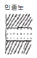
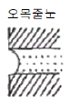
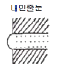
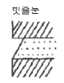
(정답률: 44%)
45. 원형 단면의 지름을 D라고 하면 단면계수 Z는?
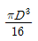
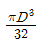
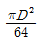
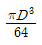
(정답률: 38%)
46. 철근콘크리트 구조에 관한 기술 중 틀린 것은?
- 철근과 콘크리트의 선팽창계수는 거의 같다.
- 철근과 콘크리트의 응력전달은 철근표면의 부착력에 의한다.
- 철근과 콘크리트의 응력분담은 각각의 단면적비에 의한다.
- 균형철근비 이상의 인장철근을 갖는 보는 콘크리트가 먼저 허용응력도에 달한다.
(정답률: 28%)
47. 단면이 40×40cm인 기둥에 축력 100tf이 편심거리 e=2cm에 작용할 때 최대응력의 크기는?
- 61kgf/cm2
- 71kgf/cm2
- 81kgf/cm2
- 91kgf/cm2
(정답률: 30%)
48. 인장을 받는 이형철근의 정착길이그
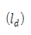
는 기본정착길이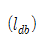
에 보정계수를 곱하여 산정한다. 다음 중 이러한 보정계수에 영향을 미치는 사항이 아닌 것은?- 콘크리트의 강도
- 콘크리트의 피복두께
- 에폭시 도막방수
- 철근의 배치 위치계수
(정답률: 26%)
49. 나무구조에 대한 설명 중 옳지 않은 것은?
- 목골구조는 건물의 뼈대는 목재로 구성하고, 벽에는 벽돌, 돌 등을 쌓아 막은 구조이다.
- 나무구조는 주로 목재를 써서 뼈대를 조립한 가구식 구조를 말한다.
- 목재패널구조는 합판 또는 널재로 대형패널을 만들어 구조내력부재로 이용하는 목조건물의 구조법이다.
- 심벽목구조는 기둥샛기둥의 내외면에 메탈라스 또는 철망을 치고 모르타르 등으로 마감한 구조로 기둥, 샛기둥, 가새 등은 외부에 보이지 않게 된다.
(정답률: 58%)
50. 철근콘크리트 단근보에서 fck=24MPa, fy=300MPa일 때 강도설계법에 의한 균형철근비를 구한 값으로 맞는 것은?
- 0.039
- 0.043
- 0.046
- 0.049
(정답률: 50%)
51. 철근콘크리트 구조물의 처짐에 관한 설명 중 옳지 않은 것은?
- 철근콘크리트 부재의 처짐은 즉각적인 처짐과 장기적인 처짐으로 구분된다.
- 장기처짐은 초기에 많은 양이 생기며, 시간이 지남에 따라 증가율도 증가한다.
- 부재의 안전성은 계수하중에 의하여 검토하지만, 처짐이나 균열 등 사용성은 사용하중에 의하여 검토한다.
- 장기적인 처짐은 주로 콘크리트의 크리이프와 건조수축으로 인하여 발생된다.
(정답률: 50%)
52. 연약지반에서 부동침하를 방지하는 대책으로 옳지 않은 것은?
- 건물을 경량화한다.
- 지하실을 강성체로 설치한다.
- 줄기초와 마찰말뚝 기초를 병용한다.
- 건물의 구조강성을 높인다.
(정답률: 50%)
53. 그림과 같은 하중을 받는 보에서 B점의 반력값으로 옳은 것은?
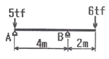
- 6 tf
- 7.5 tf
- 9 tf
- 11 tf
(정답률: 43%)
54. 그림과 같은 하중을 받는 단순보에서 스팬의 중앙인 E점의 전단력 값으로 옳은 것은?
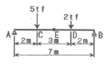
- 0
- -0.5 tf
- -0.86 tf
- +2.5 tf
(정답률: 31%)
55. 그림과 같은 보에서 콘크리트가 부담할 수 있는 전단강도를 강도설계법으로 구하면 얼마인가? (단, fck=21MPa, fy=400MPa, ∅-=0.85)
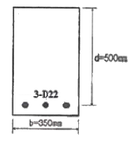
- 89.2kN
- 101.7kN
- 114.2kN
- 126.7kN
(정답률: 30%)
56. 그림과 같은 단순 지지보의 반력은?
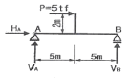
- HA = +5tf, VA = +1tf, VB =+1tf
- HA = -5tf, VA = -1tf, VB = +1tf
- HA = +5tf, VA = +1tf, VB = -1tf
- HA = -5tf, VA = +1tf, AB = +1tf
(정답률: 47%)
57. 강도설계법에 의한 철근콘크리트 기둥 설계시 그림과 같은 단주의 최대 설계 축하중은? (단, fck=27MPa, fy=100MPa, 8-D22 단면적 3096mm2, ∅=0.7)
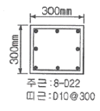
- 1.81MN
- 1.85MN
- 2.07MN
- 2.12MN
(정답률: 27%)
58. 보가 있는 2방향 슬래브를 강도설계법에서 직접설계법으로 계산할 때 MO=900kN ㆍ m로 산정되었다. 내부스팬의 부 계수모멘트(kN ㆍ m)와 정 계수모멘트(kN ㆍ m)로 옳은 것은?
- 부 계수모멘트 585, 정 계수모멘트 315
- 부 계수모멘트 630, 정 계수모멘트 270
- 부 계수모멘트 315, 정 계수모멘트 585
- 부 계수모멘트 270, 정 계수모멘트 630
(정답률: 26%)
59. 철근의 단면이 2cm2 , 탄성계수 2.0×108kg/cm2가 이고 길이가 10m, 외력으로 10tf의 인장력이 작용하면 늘어난 길이는?
- 2.50cm
- 3.83cm
- 4.76cm
- 7.14cm
(정답률: 25%)
60. 다음 중 벽돌벽의 균열 원인과 가장 관계가 먼 것은?
- 기초의 부동침하
- 내력벽의 불균형 배치
- 상하 개구부의 수직선상 배치
- 벽돌 및 모르타르의 강도부족과 신축성
(정답률: 64%)
4과목: 건축설비
61. 다음의 각종 공기조화방식의 특성에 대한 설명 중 옳지 않은 것은?
- 팬코일 유니트방식 - 개별제어가 가능하므로 부분사용이 많은 건물에서 경제적인 운전이 가능하다.
- 2중덕트방식 - 냉풍 및 온풍이 열매체이므로 실내온도 변화에 대한 응답이 빠르다.
- 단일덕트방식 - 냉, 온풍의 혼합에 의한 열손실의 발생이 크다.
- 패키지 유니트방식 - 실내 소음방지 대책이 필요하다.
(정답률: 56%)
62. 조명설비에 대한 설명 중 옳지 않은 것은?
- 나트륨등은 도로 조명, 터널 조명에 적합하다.
- 전반확산 조명기구는 광원에서의 발산 광속이 모든 방향으로 골고루 확산되도록 하는데 사용하는 조명 기구이다.
- 일반적으로 형광등은 백열등에 비하여 열을 많이 발산하며 전원 전압의 변동에 대하여 광속 변동이 많다.
- 조명기구를 건축 내장재의 일부 마무리로써 건축의 장과 조명기구를 일체화하는 조명방식을 건축화 조명이라고 한다.
(정답률: 64%)
63. 실내의 결로현상에 관한 설명 중 틀린 것은?
- 외벽의 열관류율이 높을수록 심하다.
- 외벽의 열전도율이 낮을수록 심하다.
- 실내와 실외의 온도차가 클수록 심하다.
- 실내의 상대습도가 높을수록 심하다.
(정답률: 60%)
64. 다음 중 텔레비전 공동시청안테나시설에 사용되는 설비에 속하지 않는 것은?
- 수신안테나
- 수신증폭기
- 병렬단자
- 주파수변환기
(정답률: 57%)
65. 이동보도에 대한 설명 중 잘못된 것은?
- 이동속도는 30~50m/분이다.
- 승객을 수직으로 수송하는 방식이다.
- 수평으로부터 10°이내의 경사로 되어 있다.
- 주로 역이나 공항 등에 이용된다.
(정답률: 77%)
66. LP가스에 대한 설명 중 옳지 않은 것은?
- 비중이 공기보다 크다.
- 석유의 탄화수소가스 중 용이하게 액화하기 쉬운 탄화수소가스의 혼합물로 구성되어 있다.
- 일산화탄소를 함유하지 않기 때문에 생가스에 의한 중독의 위험성은 없다.
- 발열량이 도시가스와 LNG 보다 작다.
(정답률: 19%)
67. 증기난방에 대한 설명 중 옳지 않은 것은?
- 예열시간이 길고, 간헐 운전에 사용할 수 없다.
- 온수난방에 비하여 배관경이나 방열기가 작아진다.
- 스팀 해머를 발생할 수 있다.
- 증기의 유량 제어가 어려우므로 실온 조절이 곤란하다.
(정답률: 58%)
68. 어떤 상태의 공기를 절대습도의 변화없이 건구온도만 상승시킬 때, 그 공기의 상태변화를 나타낸 다음 내용 중 옳은 것은?
- 엔탈피는 증가한다.
- 상대습도는 증가한다.
- 노점온도는 감소한다.
- 비체적은 감소한다.
(정답률: 48%)
69. 다음 중 습공기 선도의 구성요소에 포함되지 않는 것은?
- 습구온도
- 엔탈피
- 열용량
- 노점온도
(정답률: 61%)
70. 에스컬레이터에 대한 설명 중 옳지 않은 것은?
- 경사도는 30°이하로 한다.
- 디딤바닥의 정격속도는 50m/min 이하로 한다.
- 기다리는 시간이 없고 연속적으로 승객을 수송할 수 있다.
- 수송능력은 엘리베이터의 약 10배 정도이며 짧은 거리의 대량 수송에 적합하다.
(정답률: 69%)
71. 송배전 계통은 물론 각 수용가의 가전제품에서 전압을 높이거나 낮추기 위하여 사용되는 전기기기는?
- 변압기
- 전동기
- 사이리스터
- 축전지
(정답률: 72%)
72. 스프링클러 헤드의 방수량은 방수압력이 1kg/cm2인 경우 최소 얼마 이상이어야 하는가?
- 130ℓ/min
- 110ℓ/min
- 90ℓ/min
- 80ℓ/min
(정답률: 38%)
73. 펌프에 대한 설명 중 틀린 것은?
- 펌프의 실양정이란 흡입 실양정과 토출 실양정을 합한 것이다.
- 원심식 펌프에는 볼류트 펌프와 디퓨져 펌프가 있다.
- 터보형 펌프의 특성을 계통적으로 나타내는 지수로서 비속도라고 하는 기호가 이용된다.
- 펌프의 양수량은 펌프의 회전수가 변하여도 변하지 않는다.
(정답률: 58%)
74. 인간이 느끼는 열적 쾌적감을 객관적인 지표로 나타내기 위해 몇가지 단위가 쓰인다. 그 중에서 clo라는 단위가 나타내는 의미는?
- 투습저항온도
- 옷의 단열온도
- 잠열에 의한 열손실정도
- 환기에 의한 열손실정도
(정답률: 74%)
75. 다음 중 분전반에 관한 설명으로 옳은 것은?
- 분기회로의 길이가 30m이하가 되도록 위치를 선정하는 것이 바람직하다.
- 한 층에 최소 3개씩 설치하여야 한다.
- 큰 규모의 건물에서는 분전반의 수를 적게 하고 분기회로의 길이를 길게 하는 것이 좋다.
- 1개의 분전반에 넣을 수 있는 분기 개폐기의 수는 예비회로를 포함하여 최대 15회로이다.
(정답률: 33%)
76. 간선이나 분기회로 등의 옥내배선의 굵기를 결정할 때 고려하여야 할 사항과 가장 관계가 먼 것은?
- 전선의 허용전류
- 전선의 전압강하
- 전선의 기계적 강도
- 전선의 온도특성
(정답률: 41%)
77. 다음 중 관 트랩의 봉수깊이로 적당한 것은?
- 50mm 이하
- 50mm 이상 100mm 이하
- 100mm 이상 150mm 이하
- 150mm 이상
(정답률: 58%)
78. 다음 중 통기관의 목적과 가장 관계가 먼 것은?
- 배수관내의 하수가스, 해충, 세균 등의 실내 침입을 방지한다.
- 배수계통내의 배수 및 공기의 흐름을 원활히 한다.
- 사이폰 작용 및 배압에 의해서 트랩봉수가 파괴되는 것을 방지한다.
- 배수관 계통의 환기를 도모하여 관내를 청결하게 유지한다.
(정답률: 40%)
79. 고가수조방식을 채택한 건물에서 최상층에 세정밸브식 대변기가 설치되어 있을 때, 세정밸브로부터 고가수조 저수위면까지의 필요최저높이는? (단, 고가수조에서 세정밸브까지의 총 마찰손실수두는 2mAq, 세정밸브의 최저필요압력은 0.7kg/cm2이다.)
- 5m
- 9m
- 2.7m
- 1.4m
(정답률: 37%)
80. 광속이 2,000[lm]인 백열전구로부터 2[m] 떨어진 책상에서 조도를 측정하였더니 200[lx]가 되었다. 이 책상을 백열전구로부터 4[m] 떨어진 곳에 놓고 측정하였을때 조도의 값은?
- 50[lx]
- 100[lx]
- 150[lx]
- 200[lx]
(정답률: 66%)
5과목: 건축법규
81. 중층주택을 중심으로 편리한 주거환경을 조성하기 위하여 필요한 지역은?
- 제1종 일반주거지역
- 제2종 일반주거지역
- 제1종 전용주거지역
- 제2종 전용주거지역
(정답률: 55%)
82. 건축물에 설치하는 지하층의 구조 및 설비에 관한 기준으로 옳지 않은 것은?
- 바다면적이 50제곱미터 이상인 층에는 직통계단외에 피난층 또는 지상으로 통하는 비상탈출구 및 환기통을 설치할 것
- 바닥면적 1천제곱미터 이상인 층에는 피난층 또는 지상으로 통하는 직통계단을 방화구획으로 구획되는 각 부분마다 1개소 이상 설치하되, 이를 피난계단 및 특별피난계단의 구조로 할 것.
- 거실의 바닥면적의 합계가 1천제곱 이상인 층에는 환기설비를 할 것
- 지하층의 바닥면적이 200제곱미터 이상인 층에는 식수공급을 위한 급수전을 1개소이상 설치할 것
(정답률: 45%)
83. 막다른 도로의 길이가 30m일 경우 도로의 너비의 기준으로 옳은 것은?
- 2m 이상
- 3m 이상
- 4m 이상
- 6m 이상
(정답률: 29%)
84. 공동주택과 오피스텔의 난방설비를 개별난방방식으로 하는 경우의 기준으로 옳은 것은?
- 보일러는 거실 외의 곳에 설치하되, 보일러를 설치하는 곳과 거실 사이의 경계벽은 출입구를 제외하고는 방화구조의 벽으로 구획할 것
- 보일러실의 윗부분에는 그 면적이 0.3m2 이상인 환기창을 설치하고, 보일러실의 윗부분과 아랫부분에는 각각 지름 10cm 이상의 공기흡입구 및 배기구를 항상 열려있는 상태로 바깥공기에 접하도록 설치할 것
- 기름보일러를 설치하는 경우에는 기름저장소를 보일러실 외의 다른 곳에 설치할 것
- 오피스텔의 경우에는 난방구획마다 방화구조로 된 벽 ㆍ 바닥과 갑종방화문으로 된 출입문으로 구획할 것
(정답률: 38%)
85. 주차장전용건축물의 규정내용과 관계가 없는 것은?
- 건폐율
- 용적률
- 대지안의 공지
- 높이제한
(정답률: 43%)
86. 용도지역의 세분에서 도시내 및 지역간 유텅기능의 증진을 위하여 필요한 지역은?
- 중심상업지역
- 근린상업지역
- 일반상업지역
- 유통상업지역
(정답률: 59%)
87. 공용건축물을 건축하고자 할 때 허가권자와 협의한 경우 건축법상 특례가 적용되는 것은?
- 사용승인
- 설계도서 제출
- 공사감리자 선정
- 착공신고
(정답률: 32%)
88. 건축물의 허가 신청시 에너지절약계획서 제출대상은?
- 바닥면적의 합계가 1,000m2인 실내수영장
- 바닥면적의 합계가 2,000m2인 연구소
- 바닥면적의 합계가 2,000m2인 사무소
- 연면적의 합계가 5,000m2인 중앙식 공조설비를 설치한 학교
(정답률: 17%)
89. 건축면적의 산정방법에 관한 내용으로 옳지 않은 것은?
- 건축면적은 건축물의 외벽의 중심선으로 둘러싸인 부분의 수평투영면적으로 한다.
- 지표면으로부터 1미터 이하에 해당되는 건축물의 부분은 건축면적 산정에서 제외된다.
- 태양열을 주된 에너지원으로 이용하는 주택인 경우 그 건축면적의 산정방법은 건축물의 외벽 중 내측 내력벽의 중심선을 기준으로 한다.
- 건축물의 차양과 부연은 건축물의 건축면적 산정에서 제외된다.
(정답률: 47%)
90. 노외주차장의 설치에 대한 계획기준으로 옳지 않은 것은?
- 토지이용현황을 참작한다.
- 전반적인 주차수요를 참작한다.
- 자연녹지지역이 아닌 지역이어야 한다.
- 입구와 출구를 각각 따로 설치해야 하는 경우도 있다.
(정답률: 54%)
91. 거실의 각 부분으로부터 가장 가까운 거리에 있는 피난층으로 통하는 직통계단까지의 보행거리가 40m 이하가 되어야 하는 것은?
- 주요 구조부가 내화구조인 10층 사무소
- 주요 구조부가 불연재료인 10층 백화점
- 주요 구조부가 내화구조인 16층 공동주택
- 주요 구조부가 불연재료인 16층 병원
(정답률: 33%)
92. 다음 중 건설교통부령이 정하는 기준에 따라 간막이벽을 설치해야하는 건축물이 아닌 것은?
- 기숙사의 침실
- 단독주택의 거실
- 숙박시설의 객실
- 학교의 교실
(정답률: 48%)
93. 다음 중 대지관련, 건축물관련 건축기준의 비율(%)로서의 허용오차에서 가장 큰 비율로 인정해 주는 것은?
- 건축물의 높이
- 건폐율
- 용적률
- 건축선의 후퇴거리
(정답률: 43%)
94. 평행주차 형식이 아닌 경우의 지체장애인 전용주차장의 주차단위 구획으로 옳은 것은?
- 2.3×5m 이상
- 3.3×5m 이상
- 3.0×6m 이상
- 2.3×6.5m 이상
(정답률: 73%)
95. 생산관리지역에서의 용적률의 범위로 옳은 것은?
- 150퍼센트 이상 300퍼센트 이하
- 100퍼센트 이상 200퍼센트 이하
- 80퍼센트 이상 100퍼센트 이하
- 50퍼센트 이상 80퍼센트 이하
(정답률: 18%)
96. 국토의 계획 및 이용에 관한법률에 의한 용도지구를 열거한 것이다. 옳지 않은 것은?
- 주차장정비지구
- 미관지구
- 시설보호지구
- 취락지구
(정답률: 47%)
97. 출입구가 1개인 노외주차장내에 설치하는 것으로 차로의 너비를 가장 넓게 필요로 하는 주차형식은?
- 60도 대향주차
- 45도 대향주차
- 평행주차
- 직각주차
(정답률: 56%)
98. 주차대수가 200대인 기계식주차장에 확보하여야 하는 정류장은 몇 대분인가?
- 5대
- 9대
- 10대
- 12대
(정답률: 21%)
99. 건축물이 있는 대지의 분할 제한 조건에 관련 없는 규정은?
- 대지와 도로와의 관계
- 건축물의 피난시설 ㆍ 용도제한규정
- 용적률
- 일조 등의 확보를 위한 건축물의 높이 제한
(정답률: 34%)
100. 다음 승강기에 관한 설명 중 틀린 것은?(오류 신고가 접수된 문제입니다. 반드시 정답과 해설을 확인하시기 바랍니다.)
- 6층 이상 모든 건축물에는 승용승강기를 설치하여야 한다.
- 비상용 승강기 승강장의 창문 ㆍ 출입구 기타 개구부를 제외한 부분은 당해 건축물의 다른 부분과 내화구조의 바닥 및 벽으로 구획하여야 한다.
- 높이 41m를 넘는 각층의 바닥면적의 합계가 기준미달이면 비상용 승강기를 설치하지 아니할 수 있다.
- 높이 41m를 넘는 각층을 거실외의 용도로 쓰는 건축물에는 비상용 승강기를 설치하지 아니할 수 있다.
(정답률: 13%)